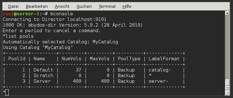
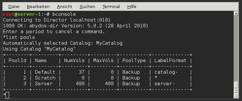

bconsole
Dieser Artikel wurde für die folgenden Ubuntu-Versionen getestet:
Ubuntu 16.04 Xenial Xerus
Ubuntu 14.04 Trusty Tahr
Artikel für fortgeschrittene Anwender
Dieser Artikel erfordert mehr Erfahrung im Umgang mit Linux und ist daher nur für fortgeschrittene Benutzer gedacht.
Zum Verständnis dieses Artikels sind folgende Seiten hilfreich:
 
Bacula Console oder kurz bconsole ist das Werkzeug, mit dem man den Director im laufenden Betrieb verwalten kann. Es bietet einen interaktiven Textmodus, d.h. man muss nicht alle Optionen auf einmal angeben, sondern wird nach und nach gefragt. Dabei wird immer zuerst das Kommando angegeben und dann die Optionen spezifiziert.

Bacula Console oder kurz bconsole ist das Werkzeug, mit dem man den Director im laufenden Betrieb verwalten kann. Es bietet einen interaktiven Textmodus, d.h. man muss nicht alle Optionen auf einmal angeben, sondern wird nach und nach gefragt. Dabei wird immer zuerst das Kommando angegeben und dann die Optionen spezifiziert.
Aufruf und Optionen¶
Der Aufruf erfolgt in einem Terminal [1]:
bconsole OPTIONEN
Die Angabe von Optionen wird in den meisten Fällen nicht benötigt. Eine Übersicht über die enthaltenen Befehle erhält man mit help. Mit quit verlässt man den interaktiven Modus.
status¶
Das erste, was man nach der Konfiguration machen sollte, ist alles zu testen. Das kann man mit status machen. Dazu am besten mit 4 dem Director anweisen, sich testweise mit allen zu verbinden. Falls das Verbinden fehlschlägt, sollte man sowohl das Passwort als auch den Servernamen überprüfen.
restore¶
Mit dem Befehl restore kann man jederzeit Dateien aus den Backups wiederherstellen. Diese werden an den Pfad geschrieben, welchen man in der Konfiguration des Directors angegeben hat (z.B. /tmp).
Nachdem man mit der Eingabe von restore das Wiederherstellungs-Menü aufgerufen hat, gibt es eine große Anzahl an Möglichkeiten, die angeforderten Dateien einzugrenzen. Üblicherweise benutzt man Option 5 "Select the most recent backup for a client" und fordert damit das letzte Backup an. Dann kann man in der Sicherung arbeiten (mit üblichen Befehlen wie cd) und mit mark <file> Dateien markieren, die man wiederherstellen möchte. Wenn man fertig ist, dann bestätigt man mit done und die Dateien werden wiederhergestellt. Im folgenden Beispiel wird die Datei /etc/resolv.conf aus dem Backup wiederhergestellt und ist abschließend unter /tmp/etc/resolv.conf zu finden.
* restore 5 1 mark /etc/resolv.conf done
list¶
Mit list kann man sich nützliche Informationen zum eingerichteten Backup-System anzeigen lassen. Mit list pools bekommt man eine Übersicht über die eingerichteten Pools oder mit list volume über alle Volumina und deren Zustand. Beispiel:
*list pools +--------+---------+---------+---------+----------+-------------+ | PoolId | Name | NumVols | MaxVols | PoolType | LabelFormat | +--------+---------+---------+---------+----------+-------------+ | 1 | Default | 37 | 0 | Backup | catalog- | | 2 | Scratch | 0 | 0 | Backup | * | | 3 | Server | 400 | 400 | Backup | server- | +--------+---------+---------+---------+----------+-------------+ *
prune¶
prune ist dazu da, Volumina, dessen Aufbewahrungszeitraum abgelaufen sind, zu löschen. Dabei wird dieser aber beachtet und falls noch gültig, wird das Volumen nicht gelöscht.
purge¶
purge hat genau die gleiche Aufgabe wie "prune", allerdings löscht sie das Volumen direkt ohne Beachtung der Aufbewahrungszeit.
help¶
Mit help kann man sich alle verfügbaren Kommandos in einer kurzen Liste anzeigen lassen. Außerdem kann man mit help <command> weitere Informationen über einen Befehl besorgen. Beispiel:
* help list Command Description ======= =========== list List objects from catalog Arguments: pools | jobs | jobtotals | volume | media <pool=pool-name> | files jobid=<nn> | copies jobid=<nn> When at a prompt, entering a period cancels the command.
messages¶
Durch Ausführen von messages werden wartende Console-Meldungen sofort angezeigt. Gleichzeitig schreibt der Director die Protokolldateien in /var/log/bacula/log.
run¶
Mit dem run Kommando kann man Jobs in den Zeitplan des Directors einfügen. Dazu gibt man den Job-Namen an und bestätigt diesen. Beispiel:
* run job=server-1-job yes Job queued. JobId=5
Problembehebung¶
 - offizielle Dokumentation
- offizielle Dokumentation- Erstellt mit Inyoka
-
 2004 – 2017 ubuntuusers.de • Einige Rechte vorbehalten
2004 – 2017 ubuntuusers.de • Einige Rechte vorbehalten
Lizenz • Kontakt • Datenschutz • Impressum • Serverstatus -
Serverhousing gespendet von